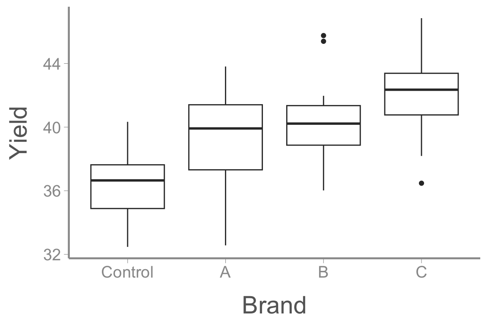
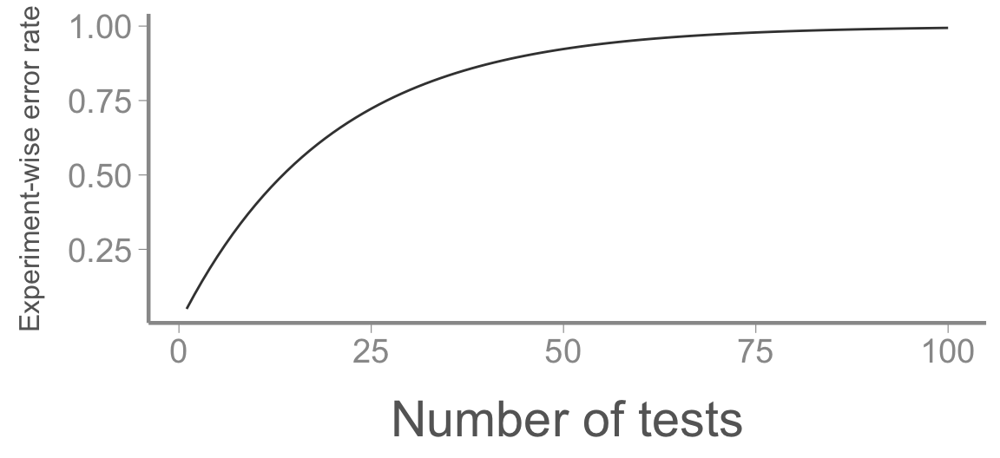

<!DOCTYPE html>
<html lang="en"><head>
<script src="../../site_libs/clipboard/clipboard.min.js"></script>
<script src="../../site_libs/quarto-html/tabby.min.js"></script>
<script src="../../site_libs/quarto-html/popper.min.js"></script>
<script src="../../site_libs/quarto-html/tippy.umd.min.js"></script>
<link href="../../site_libs/quarto-html/tippy.css" rel="stylesheet">
<link href="../../site_libs/quarto-html/light-border.css" rel="stylesheet">
<link href="../../site_libs/quarto-html/quarto-syntax-highlighting-bb62276ab45c84d9efd712f51ff97b5a.css" rel="stylesheet" id="quarto-text-highlighting-styles"><meta charset="utf-8">
  <meta name="generator" content="quarto-1.10.18">

  <title>FANR6750 – multcomp</title>
  <meta name="apple-mobile-web-app-capable" content="yes">
  <meta name="apple-mobile-web-app-status-bar-style" content="black-translucent">
  <meta name="viewport" content="width=device-width, initial-scale=1.0, maximum-scale=1.0, user-scalable=no, minimal-ui">
  <link rel="stylesheet" href="../../site_libs/revealjs/dist/reset.css">
  <link rel="stylesheet" href="../../site_libs/revealjs/dist/reveal.css">
  <style>
    /* Default styles provided by pandoc.
    ** See https://pandoc.org/MANUAL.html#variables-for-html for config info.
    */
    span.smallcaps{font-variant: small-caps;}
    div.columns{display: flex; gap: 1.5em;}
    div.column{flex: auto;}
    @media screen {
    div.columns{gap: min(4vw, 1.5em);}
    div.column{overflow-x: auto;}
    }
    div.hanging-indent{margin-left: 1.5em; text-indent: -1.5em;}
    ul.task-list{list-style: none;}
    ul.task-list li input[type="checkbox"] {
      width: 0.8em;
      margin: 0 0.8em 0.2em -1em; /* quarto-specific, see https://github.com/quarto-dev/quarto-cli/issues/4556 */ 
      vertical-align: middle;
    }
    /* CSS for syntax highlighting */
    html { -webkit-text-size-adjust: 100%; }
    pre > code.sourceCode { white-space: pre; position: relative; }
    pre > code.sourceCode > span { display: inline-block; line-height: 1.25; }
    pre > code.sourceCode > span:empty { height: 1.2em; }
    .sourceCode { overflow: visible; }
    code.sourceCode > span { color: inherit; text-decoration: inherit; }
    div.sourceCode { margin: 1em 0; }
    pre.sourceCode { margin: 0; }
    @media screen {
    div.sourceCode { overflow: auto; }
    }
    @media print {
    pre > code.sourceCode { white-space: pre-wrap; }
    pre > code.sourceCode > span { text-indent: -5em; padding-left: 5em; }
    }
    pre.numberSource code
      { counter-reset: source-line 0; }
    pre.numberSource code > span
      { position: relative; left: -4em; counter-increment: source-line; }
    pre.numberSource code > span > a:first-child::before
      { content: counter(source-line);
        position: relative; left: -1em; text-align: right; vertical-align: baseline;
        border: none; display: inline-block;
        -webkit-touch-callout: none; -webkit-user-select: none;
        -khtml-user-select: none; -moz-user-select: none;
        -ms-user-select: none; user-select: none;
        padding: 0 4px; width: 4em;
      }
    pre.numberSource { margin-left: 3em;  padding-left: 4px; }
    div.sourceCode
      { color: #24292e;  }
    @media screen {
    pre > code.sourceCode > span > a:first-child::before { text-decoration: underline; }
    }
    code span { color: #24292e; } /* Normal */
    code span.al { color: #ff5555; font-weight: bold; } /* Alert */
    code span.an { color: #6a737d; } /* Annotation */
    code span.at { color: #d73a49; } /* Attribute */
    code span.bn { color: #005cc5; } /* BaseN */
    code span.bu { color: #d73a49; } /* BuiltIn */
    code span.cf { color: #d73a49; } /* ControlFlow */
    code span.ch { color: #032f62; } /* Char */
    code span.cn { color: #005cc5; } /* Constant */
    code span.co { color: #6a737d; } /* Comment */
    code span.cv { color: #6a737d; } /* CommentVar */
    code span.do { color: #6a737d; } /* Documentation */
    code span.dt { color: #d73a49; } /* DataType */
    code span.dv { color: #005cc5; } /* DecVal */
    code span.er { color: #ff5555; text-decoration: underline; } /* Error */
    code span.ex { color: #d73a49; font-weight: bold; } /* Extension */
    code span.fl { color: #005cc5; } /* Float */
    code span.fu { color: #6f42c1; } /* Function */
    code span.im { color: #032f62; } /* Import */
    code span.in { color: #6a737d; } /* Information */
    code span.kw { color: #d73a49; } /* Keyword */
    code span.op { color: #24292e; } /* Operator */
    code span.ot { color: #6f42c1; } /* Other */
    code span.pp { color: #d73a49; } /* Preprocessor */
    code span.re { color: #6a737d; } /* RegionMarker */
    code span.sc { color: #005cc5; } /* SpecialChar */
    code span.ss { color: #032f62; } /* SpecialString */
    code span.st { color: #032f62; } /* String */
    code span.va { color: #e36209; } /* Variable */
    code span.vs { color: #032f62; } /* VerbatimString */
    code span.wa { color: #ff5555; } /* Warning */
  </style>
  <link rel="stylesheet" href="../../site_libs/revealjs/dist/theme/quarto-fc859e93a8aea861b048bf3194d4829c.css">
  <link href="../../site_libs/revealjs/plugin/quarto-line-highlight/line-highlight.css" rel="stylesheet">
  <link href="../../site_libs/revealjs/plugin/reveal-menu/menu.css" rel="stylesheet">
  <link href="../../site_libs/revealjs/plugin/reveal-menu/quarto-menu.css" rel="stylesheet">
  <link href="../../site_libs/revealjs/plugin/quarto-support/footer.css" rel="stylesheet">
  <style type="text/css">
    .reveal div.sourceCode {
      margin: 0;
      overflow: auto;
    }
    .reveal div.hanging-indent {
      margin-left: 1em;
      text-indent: -1em;
    }
    .reveal .slide:not(.center) {
      height: 100%;
    }
    .reveal .slide.scrollable {
      overflow-y: auto;
    }
    .reveal .footnotes {
      height: 100%;
      overflow-y: auto;
    }
    .reveal .slide .absolute {
      position: absolute;
      display: block;
    }
    .reveal .footnotes ol {
      counter-reset: ol;
      list-style-type: none; 
      margin-left: 0;
    }
    .reveal .footnotes ol li:before {
      counter-increment: ol;
      content: counter(ol) ". "; 
    }
    .reveal .footnotes ol li > p:first-child {
      display: inline-block;
    }
    .reveal .slide ul,
    .reveal .slide ol {
      margin-bottom: 0.5em;
    }
    .reveal .slide ul li,
    .reveal .slide ol li {
      margin-top: 0.4em;
      margin-bottom: 0.2em;
    }
    .reveal .slide ul[role="tablist"] li {
      margin-bottom: 0;
    }
    .reveal .slide ul li > *:first-child,
    .reveal .slide ol li > *:first-child {
      margin-block-start: 0;
    }
    .reveal .slide ul li > *:last-child,
    .reveal .slide ol li > *:last-child {
      margin-block-end: 0;
    }
    .reveal .slide .columns:nth-child(3) {
      margin-block-start: 0.8em;
    }
    .reveal blockquote {
      box-shadow: none;
    }
    .reveal .tippy-content>* {
      margin-top: 0.2em;
      margin-bottom: 0.7em;
    }
    .reveal .tippy-content>*:last-child {
      margin-bottom: 0.2em;
    }
    .reveal .slide > img.stretch.quarto-figure-center,
    .reveal .slide > img.r-stretch.quarto-figure-center {
      display: block;
      margin-left: auto;
      margin-right: auto; 
    }
    .reveal .slide > img.stretch.quarto-figure-left,
    .reveal .slide > img.r-stretch.quarto-figure-left  {
      display: block;
      margin-left: 0;
      margin-right: auto; 
    }
    .reveal .slide > img.stretch.quarto-figure-right,
    .reveal .slide > img.r-stretch.quarto-figure-right  {
      display: block;
      margin-left: auto;
      margin-right: 0; 
    }
  </style>
  <script src="../../site_libs/kePrint/kePrint.js"></script>
  <link href="../../site_libs/lightable/lightable.css" rel="stylesheet">
</head>
<body class="quarto-light">
  <div class="reveal">
    <div class="slides">


<section id="lecture-10-multiple-comparisons" class="slide level2 theme-title center">
<h2>LECTURE 10: multiple comparisons</h2>
<div class="footer">
<p>FANR 6750<br>
Fall 2026</p>
</div>
</section>
<section id="outline" class="slide level2 theme-inverse smaller">
<h2>Outline</h2>
<p><br></p>
<h3 id="motivation">1) Motivation</h3>
<p><br></p>
<div class="fragment">
<h3 id="pairwise-t-tests">2) Pairwise <em>t</em>-tests</h3>
<p><br></p>
</div>
<div class="fragment">
<h3 id="tukeys-hsd-test">3) Tukey’s HSD test</h3>
<p><br></p>
</div>
<div class="fragment">
<h3 id="a-priori-contrasts">4) <em>a priori</em> contrasts</h3>
<p><br></p>
</div>
</section>
<section id="motivation-1" class="slide level2 smaller">
<h2>Motivation</h2>
<div class="fragment">
<blockquote>
<p>Following a significant <em>F</em>-test, the next step is to determine which means differ</p>
</blockquote>
<p><br></p>
</div>
<div class="fragment">
<blockquote>
<p>If all group means are to be compared, then we should correct for multiple testing</p>
</blockquote>
<p><br></p>
</div>
<div class="fragment">
<blockquote>
<p>That is, conducting many tests increases the probability of finding one that is significant, even if it is not </p>
</blockquote>
</div>
</section>
<section id="motivation-2" class="slide level2">
<h2>Motivation</h2>
<div class="cell" data-layout-align="center">
<div class="cell-output-display">
<div class="quarto-figure quarto-figure-center">
<figure>
<p></p>
</figure>
</div>
</div>
</div>
</section>
<section id="example" class="slide level2 smaller">
<h2>Example</h2>
<p>Aphids are a major crop pest and farmers are interested which brands of pesticide have the biggest influence on crop yield</p>
<p>The data:</p>
<div class="cell" data-layout-align="center">
<div class="code-copy-outer-scaffold"><div class="sourceCode cell-code" id="cb1"><pre class="sourceCode numberSource r number-lines code-with-copy"><code class="sourceCode r"><span id="cb1-1"><a aria-label="1"></a><span class="fu">data</span>(<span class="st">"pesticidedata"</span>)</span>
<span id="cb1-2"><a aria-label="2"></a></span>
<span id="cb1-3"><a aria-label="3"></a><span class="fu">ggplot</span>(pesticidedata, <span class="fu">aes</span>(<span class="at">x =</span> Brand, <span class="at">y =</span> Yield)) <span class="sc">+</span> </span>
<span id="cb1-4"><a aria-label="4"></a>  <span class="fu">geom_boxplot</span>()</span></code></pre></div><button title="Copy to Clipboard" class="code-copy-button"><i class="bi"></i></button></div>

</div>
</section>
<section id="example-1" class="slide level2 smaller">
<h2>Example</h2>
<div class="cell" data-layout-align="center">
<div class="code-copy-outer-scaffold"><div class="sourceCode cell-code" id="cb2"><pre class="sourceCode numberSource r number-lines code-with-copy"><code class="sourceCode r"><span id="cb2-1"><a aria-label="1"></a>fit.lm <span class="ot">&lt;-</span> <span class="fu">lm</span>(Yield <span class="sc">~</span> Brand, <span class="at">data =</span> pesticidedata)</span>
<span id="cb2-2"><a aria-label="2"></a><span class="fu">summary</span>(fit.lm)</span></code></pre></div><button title="Copy to Clipboard" class="code-copy-button"><i class="bi"></i></button></div>
<div class="cell-output cell-output-stdout">
<pre><code>
Call:
lm(formula = Yield ~ Brand, data = pesticidedata)

Residuals:
   Min     1Q Median     3Q    Max 
-6.932 -1.499  0.335  1.406  5.459 

Coefficients:
            Estimate Std. Error t value Pr(&gt;|t|)    
(Intercept)   36.357      0.494   73.66  &lt; 2e-16 ***
BrandA         3.142      0.698    4.50  1.9e-05 ***
BrandB         3.940      0.698    5.65  1.7e-07 ***
BrandC         5.616      0.698    8.05  2.3e-12 ***
---
Signif. codes:  0 '***' 0.001 '**' 0.01 '*' 0.05 '.' 0.1 ' ' 1

Residual standard error: 2.47 on 96 degrees of freedom
Multiple R-squared:  0.416, Adjusted R-squared:  0.397 
F-statistic: 22.7 on 3 and 96 DF,  p-value: 3.29e-11</code></pre>
</div>
</div>
</section>
<section id="pairwise-t-test" class="slide level2 theme-inverse center">
<h2>Pairwise <em>t</em>-test</h2>
</section>
<section id="pairwise-t-test-1" class="slide level2 smaller">
<h2>Pairwise <em>t</em>-test</h2>
<p><br></p>
<p>One can always fall back on pairwise, two-sample <em>t</em>-tests (or linear models)</p>
<p><br></p>
<div class="cell" data-layout-align="center">
<div class="code-copy-outer-scaffold"><div class="sourceCode cell-code" id="cb4"><pre class="sourceCode numberSource r number-lines code-with-copy"><code class="sourceCode r"><span id="cb4-1"><a aria-label="1"></a><span class="fu">pairwise.t.test</span>(pesticidedata<span class="sc">$</span>Yield, pesticidedata<span class="sc">$</span>Brand, <span class="at">p.adjust.method =</span> <span class="st">"none"</span>)</span></code></pre></div><button title="Copy to Clipboard" class="code-copy-button"><i class="bi"></i></button></div>
<div class="cell-output cell-output-stdout">
<pre><code>
    Pairwise comparisons using t tests with pooled SD 

data:  pesticidedata$Yield and pesticidedata$Brand 

  Control A     B   
A 2e-05   -     -   
B 2e-07   0.26  -   
C 2e-12   6e-04 0.02

P value adjustment method: none </code></pre>
</div>
</div>
</section>
<section id="pairwise-t-test-2" class="slide level2 smaller">
<h2>Pairwise <em>t</em>-test</h2>
<p>One can always fall back on pairwise, two-sample <em>t</em>-tests (or linear models)…BUT</p>
<div class="fragment">
<p>Running multiple tests increases the probability of finding one that is significant, even if it is not (remember the jellybeans!)</p>
<div class="cell" data-layout-align="center">
<div class="cell-output-display">
<div class="quarto-figure quarto-figure-center">
<figure>
<p></p>
</figure>
</div>
</div>
</div>
</div>
<div class="fragment">
<p>One common way to deal with multiple comparisons is to do pairwise <em>t</em>-tests but <em>adjust</em> the <em>p</em>-values of each test</p>
<ul>
<li>Essentially, the adjustments make it harder to reject the null hypothesis, thereby making the tests more conservative</li>
</ul>
</div>
</section>
<section id="bonferroni-adjustment" class="slide level2 smaller">
<h2>Bonferroni adjustment</h2>
<p>One of the most common adjustments is the <em>Bonferroni</em> correction</p>
<ul>
<li><p>Multiply each <em>p</em>-value by the number of tests</p></li>
<li><p>If this results in <em>p</em> &gt; 1, set <em>p</em> to 1</p></li>
</ul>
<div class="fragment">
<div class="cell" data-layout-align="center">
<div class="code-copy-outer-scaffold"><div class="sourceCode cell-code" id="cb6"><pre class="sourceCode numberSource r number-lines code-with-copy"><code class="sourceCode r"><span id="cb6-1"><a aria-label="1"></a><span class="fu">pairwise.t.test</span>(pesticidedata<span class="sc">$</span>Yield, pesticidedata<span class="sc">$</span>Brand, <span class="at">p.adjust.method =</span> <span class="st">"bonferroni"</span>)</span></code></pre></div><button title="Copy to Clipboard" class="code-copy-button"><i class="bi"></i></button></div>
<div class="cell-output cell-output-stdout">
<pre><code>
    Pairwise comparisons using t tests with pooled SD 

data:  pesticidedata$Yield and pesticidedata$Brand 

  Control A     B    
A 1e-04   -     -    
B 1e-06   1.000 -    
C 1e-11   0.004 0.110

P value adjustment method: bonferroni </code></pre>
</div>
</div>
</div>
</section>
<section id="reflection" class="slide level2 theme-inverse smaller">
<h2>Reflection</h2>
<p>At first, it can be confusing when a <em>p</em>-value is significant in one case (e.g., unadjusted) but not significant in another (e.g., Bonferroni)<a href="#/footnotes" class="footnote-ref" id="fnref1" role="doc-noteref" data-footnote-href="#/fn1" onclick=""><sup>1</sup></a></p>
<p><br></p>
<div class="fragment">
<p>If you find yourself in this situation, take a step back and think about a few things:</p>
<ul>
<li class="fragment"><p>What does the p-value measure? What is the risk when rejecting the null hypothesis?</p></li>
<li class="fragment"><p>When is falsely rejecting the null hypothesis (Type I error) most likely?</p></li>
<li class="fragment"><p>What is so special about <span class="math inline">\(\alpha = 0.05\)</span>?</p></li>
</ul>
</div>
<aside></aside></section>
<section id="tukeys-hsd-test-1" class="slide level2 theme-inverse center">
<h2>Tukey’s hsd test</h2>
</section>
<section id="john-tukey" class="slide level2 smaller">
<h2>John tukey</h2>
<p><br></p>
<div class="cell" data-layout-align="center">
<div class="cell-output-display">
<div class="quarto-figure quarto-figure-center">
<figure>
<p></p>
</figure>
</div>
</div>
</div>
<p><br></p>
<blockquote>
<p>The combination of some data and an aching desire for an answer does not ensure that a reasonable answer can be extracted from a given body of data</p>
</blockquote>
</section>
<section id="tukeys-hsd-test-2" class="slide level2 smaller">
<h2>Tukey’s hsd test</h2>
<p>According to Tukey’s Honestly Significant Difference test, two means (<span class="math inline">\(\bar{y}_i\)</span> and <span class="math inline">\(\bar{y}_j\)</span>) are different if:</p>
<p><span class="math display">\[\large |\bar{y}_i - \bar{y}_j | \geq  q_{1- \alpha,a,a(n-1)}\sqrt{\frac{MSW}{n}}\]</span></p>
<p><br></p>
<p>where <span class="math inline">\(q\)</span> comes from the “Studentized Range Distribution”(see <code>qtukey</code> in <code>R</code>). MSW = mean squared error from the ANOVA table</p>
</section>
<section id="example-2" class="slide level2 smaller">
<h2>Example</h2>
<p><br></p>
<div class="cell" data-layout-align="center">
<div class="code-copy-outer-scaffold"><div class="sourceCode cell-code" id="cb8"><pre class="sourceCode numberSource r number-lines code-with-copy"><code class="sourceCode r"><span id="cb8-1"><a aria-label="1"></a>fit.aov <span class="ot">&lt;-</span> <span class="fu">aov</span>(Yield <span class="sc">~</span> Brand, <span class="at">data =</span> pesticidedata)</span>
<span id="cb8-2"><a aria-label="2"></a><span class="fu">TukeyHSD</span>(fit.aov)</span></code></pre></div><button title="Copy to Clipboard" class="code-copy-button"><i class="bi"></i></button></div>
<div class="cell-output cell-output-stdout">
<pre><code>  Tukey multiple comparisons of means
    95% family-wise confidence level

Fit: aov(formula = Yield ~ Brand, data = pesticidedata)

$Brand
            diff     lwr   upr  p adj
A-Control 3.1424  1.3174 4.967 0.0001
B-Control 3.9403  2.1153 5.765 0.0000
C-Control 5.6159  3.7909 7.441 0.0000
B-A       0.7979 -1.0271 2.623 0.6639
C-A       2.4735  0.6485 4.299 0.0034
C-B       1.6756 -0.1495 3.501 0.0838</code></pre>
</div>
</div>
</section>
<section id="a-posteriori-comparisons" class="slide level2 smaller">
<h2><em>a posteriori</em> comparisons</h2>
<ul>
<li class="fragment"><p>Bonferonni and Tukey’s HSD are the most commonly used types of <em>a posteriori</em> comparisons - comparing all possible pairwise combinations only <em>after</em> a significant F-test</p></li>
<li class="fragment"><p>There are many other types of <em>a posteriori</em> comparison, e.g.&nbsp;Fisher’s LSD (see <code>?p.adjust</code> for even more)</p></li>
<li class="fragment"><p><em>A posteriori</em> comparisons decrease the risk of Type I error (but increase the risk of Type II error)<a href="#/footnotes" class="footnote-ref" id="fnref2" role="doc-noteref" data-footnote-href="#/fn2" onclick=""><sup>2</sup></a></p></li>
<li class="fragment"><p>By forcing the researcher to correct for all possible combinations, <em>a posteriori</em> comparisons often overly conservative</p></li>
<li class="fragment"><p>A better approach in many situations is to use <em>a priori</em> <strong>contrasts</strong></p></li>
</ul>
<aside></aside></section>
<section id="a-priori-contrasts-1" class="slide level2 theme-inverse center">
<h2><em>a priori</em> contrasts</h2>
</section>
<section id="mussel-size" class="slide level2 smaller">
<h2>Mussel size</h2>
<div class="cell" data-layout-align="center">
<div class="cell-output-display">
<table class="table table-striped table-hover table-condensed caption-top" style="margin-left: auto; margin-right: auto;">
<colgroup>
<col style="width: 25%">
<col style="width: 25%">
<col style="width: 25%">
<col style="width: 25%">
</colgroup>
<thead>
<tr class="header">
<th colspan="4" data-quarto-table-cell-role="th" style="text-align: center; border-bottom: hidden; padding-bottom: 0; padding-left: 3px; padding-right: 3px;"><div style="border-bottom: 1px solid #ddd; padding-bottom: 5px; ">
Watershed
</div></th>
</tr>
<tr class="even">
<th style="text-align: center;" data-quarto-table-cell-role="th">Twelvemile</th>
<th style="text-align: center;" data-quarto-table-cell-role="th">Chattooga</th>
<th style="text-align: center;" data-quarto-table-cell-role="th">Keowee</th>
<th style="text-align: center;" data-quarto-table-cell-role="th">Coneross</th>
</tr>
</thead>
<tbody>
<tr class="odd">
<td style="text-align: center;">16</td>
<td style="text-align: center;">18</td>
<td style="text-align: center;">28</td>
<td style="text-align: center;">14</td>
</tr>
<tr class="even">
<td style="text-align: center;">8</td>
<td style="text-align: center;">25</td>
<td style="text-align: center;">22</td>
<td style="text-align: center;">20</td>
</tr>
<tr class="odd">
<td style="text-align: center;">12</td>
<td style="text-align: center;">22</td>
<td style="text-align: center;">24</td>
<td style="text-align: center;">11</td>
</tr>
<tr class="even">
<td style="text-align: center;">17</td>
<td style="text-align: center;">16</td>
<td style="text-align: center;">20</td>
<td style="text-align: center;">17</td>
</tr>
<tr class="odd">
<td style="text-align: center;">13</td>
<td style="text-align: center;">26</td>
<td style="text-align: center;">27</td>
<td style="text-align: center;">15</td>
</tr>
</tbody>
</table>
</div>
</div>
<div class="fragment">
<ul>
<li><p>Chattooga and Keowee are more forested</p></li>
<li><p>Coneross and Twelvemile are more agricultural</p></li>
</ul>
</div>
</section>
<section id="anova-results" class="slide level2 smaller">
<h2>Anova results</h2>
<div class="cell" data-layout-align="center">
<div class="code-copy-outer-scaffold"><div class="sourceCode cell-code" id="cb10"><pre class="sourceCode numberSource r number-lines code-with-copy"><code class="sourceCode r"><span id="cb10-1"><a aria-label="1"></a>fit.mussel <span class="ot">&lt;-</span> <span class="fu">lm</span>(Length <span class="sc">~</span> Watershed, <span class="at">data =</span> musseldata)</span>
<span id="cb10-2"><a aria-label="2"></a><span class="fu">summary</span>(fit.mussel)</span></code></pre></div><button title="Copy to Clipboard" class="code-copy-button"><i class="bi"></i></button></div>
<div class="cell-output cell-output-stdout">
<pre><code>
Call:
lm(formula = Length ~ Watershed, data = musseldata)

Residuals:
   Min     1Q Median     3Q    Max 
  -5.4   -2.5   -0.2    3.0    4.6 

Coefficients:
                    Estimate Std. Error t value Pr(&gt;|t|)    
(Intercept)            21.40       1.64   13.02  6.2e-10 ***
WatershedConeross      -6.00       2.32   -2.58   0.0201 *  
WatershedKeowee         2.80       2.32    1.20   0.2458    
WatershedTwelvemile    -8.20       2.32   -3.53   0.0028 ** 
---
Signif. codes:  0 '***' 0.001 '**' 0.01 '*' 0.05 '.' 0.1 ' ' 1

Residual standard error: 3.67 on 16 degrees of freedom
Multiple R-squared:  0.645, Adjusted R-squared:  0.579 
F-statistic:  9.7 on 3 and 16 DF,  p-value: 0.000692</code></pre>
</div>
</div>
</section>
<section id="pairwise-comparisons" class="slide level2 smaller">
<h2>Pairwise comparisons</h2>
<div class="cell" data-layout-align="center">
<div class="code-copy-outer-scaffold"><div class="sourceCode cell-code" id="cb12"><pre class="sourceCode numberSource r number-lines code-with-copy"><code class="sourceCode r"><span id="cb12-1"><a aria-label="1"></a><span class="fu">pairwise.t.test</span>(musseldata<span class="sc">$</span>Length, musseldata<span class="sc">$</span>Watershed, <span class="at">p.adjust.method =</span> <span class="st">"bonferroni"</span>)</span></code></pre></div><button title="Copy to Clipboard" class="code-copy-button"><i class="bi"></i></button></div>
<div class="cell-output cell-output-stdout">
<pre><code>
    Pairwise comparisons using t tests with pooled SD 

data:  musseldata$Length and musseldata$Watershed 

           Chattooga Coneross Keowee
Coneross   0.120     -        -     
Keowee     1.000     0.010    -     
Twelvemile 0.017     1.000    0.001 

P value adjustment method: bonferroni </code></pre>
</div>
</div>
</section>
<section id="hypotheses" class="slide level2 smaller">
<h2>Hypotheses</h2>
<p>Instead of comparing all possible combinations, what if we are only interested in some specific comparisons?</p>
<ol type="1">
<li><p>Do the agricultural watersheds differ from one another?</p></li>
<li><p>Do the forested watersheds differ from one another?</p></li>
</ol>
<div class="fragment">
<p>Also, what if we are interested in <em>combinations</em> of treatments?</p>
<ol start="3" type="1">
<li>Do mussels from forested watersheds differ from agricultural watersheds?</li>
</ol>
</div>
<div class="fragment">
<p>What are the advantages of focusing only on these specific questions?</p>
</div>
</section>
<section id="hypotheses-as-contrasts" class="slide level2 smaller">
<h2>Hypotheses as contrasts</h2>
<p><span class="highlight">Hypotheses</span></p>
<div class="cell" data-layout-align="center">
<div class="cell-output-display">
<table class="table table-condensed caption-top" style="font-size: 16px; width: auto !important; margin-left: auto; margin-right: auto;">
<thead>
<tr class="header">
<th style="text-align: left;" data-quarto-table-cell-role="th"></th>
<th style="text-align: left;" data-quarto-table-cell-role="th">Comparisons</th>
<th style="text-align: center;" data-quarto-table-cell-role="th">H0 to test</th>
</tr>
</thead>
<tbody>
<tr class="odd">
<td style="text-align: left;">1</td>
<td style="text-align: left;">Forested vs agricultural</td>
<td style="text-align: center;">\(\frac{\mu_T + \mu_{Co}}{2} - \frac{\mu_{Ch} + \mu_K}{2}=0\)</td>
</tr>
<tr class="even">
<td style="text-align: left;">2</td>
<td style="text-align: left;">Twelvemile vs Coneross</td>
<td style="text-align: center;">\(\mu_{T} - \mu_{Ch} = 0\)</td>
</tr>
<tr class="odd">
<td style="text-align: left;">3</td>
<td style="text-align: left;">Chattooga vs Keowee</td>
<td style="text-align: center;">\(\mu_{Ch} - \mu_{K} = 0\)</td>
</tr>
</tbody>
</table>
</div>
</div>
<div class="fragment">
<p><span class="highlight">Linear combinations</span></p>
<div class="cell" data-layout-align="center">
<div class="cell-output-display">
<table class="table table-condensed caption-top" style="font-size: 16px; width: auto !important; margin-left: auto; margin-right: auto;">
<tbody>
<tr class="odd">
<td style="text-align: center;">1</td>
<td style="text-align: left;">\((1/2)\mu_T - (1/2)\mu_{Ch} - (1/2)\mu_{K} + (1/2)\mu_{Co}\)</td>
</tr>
<tr class="even">
<td style="text-align: center;">2</td>
<td style="text-align: left;">\((1)\mu_T + (0)\mu_{Ch} + (0)\mu_{K} - (1)\mu_{Co}\)</td>
</tr>
<tr class="odd">
<td style="text-align: center;">3</td>
<td style="text-align: left;">\((0)\mu_T + (1)\mu_{Ch} - (1)\mu_K + (0)\mu_{Co}\)</td>
</tr>
</tbody>
</table>
</div>
</div>
</div>
</section>
<section id="are-these-contrasts-orthogonal" class="slide level2 smaller">
<h2>Are these contrasts orthogonal?</h2>
<p>A set of linear combinations is called a set of orthogonal contrasts<a href="#/footnotes" class="footnote-ref" id="fnref3" role="doc-noteref" data-footnote-href="#/fn3" onclick=""><sup>3</sup></a> if the following conditions hold for all pairs of linear combinations:</p>
<div class="fragment">
<p>Given</p>
<p><span class="math display">\[L_1 = a_1\mu_1 + a_2\mu_2 + ... + a_a\mu_a\]</span></p>
<p>and</p>
<p><span class="math display">\[L_2 = b_1\mu_1 + b_2\mu_2 +...+ b_a\mu_a\]</span></p>
<p>then <span class="math inline">\(L_1\)</span> and <span class="math inline">\(L_2\)</span> are orthogonal if:</p>
<p><span class="math display">\[\sum_i a_i=0;\;\; \sum_i b_i=0; \;\;and \; \sum_i a_ib_i=0\]</span></p>
</div>
<aside></aside></section>
<section id="back-to-the-saw-data" class="slide level2 smaller">
<h2>Back to the saw data</h2>
<p>Returning to the question: “Does mussel size differ among forested and agricultural watersheds?”:</p>
<p><span class="math display">\[H_{0_1} = \frac{\mu_T + \mu_{Co}}{2} - \frac{\mu_{Ch} + \mu_{K}}{2} = 0\]</span></p>
<div class="fragment">
<p>Multiplying through by 2 gives:</p>
<p><span class="math display">\[H_{0_1} = (\mu_{T} + \mu_{Co}) - (\mu_{Ch} + \mu_K) = 0\]</span></p>
</div>
<div class="fragment">
<p>Which can be written as<a href="#/footnotes" class="footnote-ref" id="fnref4" role="doc-noteref" data-footnote-href="#/fn4" onclick=""><sup>4</sup></a>: <span class="math display">\[L1 = (1)\mu_T + (-1)\mu_{Ch} + (-1)\mu_K + (1)\mu_{Co}\]</span> where the coefficients are <span class="math inline">\(a_1 = 1\)</span>, <span class="math inline">\(a_2 = -1\)</span>, <span class="math inline">\(a_3 = -1\)</span>, and <span class="math inline">\(a_4 = 1\)</span></p>
</div>
<aside></aside></section>
<section id="are-the-contrasts-orthogonal" class="slide level2 smaller">
<h2>Are the contrasts orthogonal?</h2>
<div class="fragment">
<p>Does each set of coefficients sum to 0<a href="#/footnotes" class="footnote-ref" id="fnref5" role="doc-noteref" data-footnote-href="#/fn5" onclick=""><sup>5</sup></a>?</p>
<ul>
<li><p><span class="math inline">\(L_1\)</span>: <span class="math inline">\(\sum_i a = 1 - 1 - 1 + 1 = 0\)</span></p></li>
<li><p><span class="math inline">\(L_2\)</span>: <span class="math inline">\(\sum_i a  = 1 + 0 + 0 - 1 = 0\)</span></p></li>
<li><p><span class="math inline">\(L_3\)</span>: <span class="math inline">\(\sum_i a  = 0 + 1 - 1 + 0 = 0\)</span></p></li>
</ul>
</div>
<div class="fragment">
<p>Do the products of pairs of coefficients sum to 0?</p>
<ul>
<li><p>For <span class="math inline">\(L_1\)</span> and <span class="math inline">\(L_2\)</span>: <span class="math inline">\((1)(1) + (-1)(0) + (-1)(0) + (1)(-1) = 0\)</span></p></li>
<li><p>For <span class="math inline">\(L_1\)</span> and <span class="math inline">\(L_3\)</span>: <span class="math inline">\((1)(0) + (-1)(1) + (-1)(-1) + (1)(0) = 0\)</span></p></li>
<li><p>For <span class="math inline">\(L_2\)</span> and <span class="math inline">\(L_3\)</span>: <span class="math inline">\((1)(0) + (0)(1) + (0)(-1) + (-1)(0) = 0\)</span></p></li>
</ul>
</div>
<aside></aside></section>
<section id="testing-the-null-hypotheses" class="slide level2 smaller">
<h2>Testing the null hypotheses</h2>
<p>To obtain the sums of squares for each contrast, we use the general formula:</p>
<p><span class="math display">\[SS_L =\frac{(\sum_i a_i T_i)^2}{n \sum_i a_i^2}\]</span></p>
<p>where <span class="math inline">\(T_i\)</span> is the sum of observations in group <span class="math inline">\(i\)</span>, and <span class="math inline">\(a_i\)</span> is the corresponding coefficient for group <span class="math inline">\(i\)</span></p>
<div class="fragment">
<p>For thefirst hypothesis we have:</p>
<p><span class="math display">\[ SS_{L_1} = \frac{(66-107-121+77)^2}{5(1 + 1 + 1 + 1)} = 361.2\]</span></p>
</div>
</section>
<section id="sums-of-squares-for-each-contrast" class="slide level2 smaller">
<h2>Sums of squares for each contrast</h2>
<p>For the second hypothesis we have: <span class="math inline">\(L_2 = \mu_T + 0 + 0 - \mu_{Co}\)</span> with coefficients <span class="math inline">\(a_i = (1, 0, 0,-1)\)</span></p>
<p><span class="math display">\[SS_{L_2} = \frac{(66 +0 +0 - 77)^2}{5(1 + 0 + 0 + 1)} = 12.1\]</span></p>
<div class="fragment">
<p>For the third hypothesis we have: <span class="math inline">\(L_3 = 0 + \mu_B - \mu_C + 0\)</span> with coefficients <span class="math inline">\(a_i = (0, 1,-1, 0)\)</span></p>
<p><span class="math display">\[SS_{L_3} = \frac{(0 + 107 - 121 + 0)^2}{5(0 + 1 + 1 + 0)} = 19.6\]</span></p>
</div>
</section>
<section id="expanded-anova-table" class="slide level2 smaller">
<h2>Expanded anova table</h2>
<p>For each contrast, each SS is divided by 1 d.f., and then divided by MSW</p>
<div class="cell" data-layout-align="center">
<div class="cell-output-display">
<table class="table table-condensed caption-top" style="font-size: 16px; width: auto !important; margin-left: auto; margin-right: auto;">
<thead>
<tr class="header">
<th style="text-align: right;" data-quarto-table-cell-role="th">Source</th>
<th style="text-align: center;" data-quarto-table-cell-role="th">df</th>
<th style="text-align: center;" data-quarto-table-cell-role="th">SS</th>
<th style="text-align: center;" data-quarto-table-cell-role="th">MS</th>
<th style="text-align: center;" data-quarto-table-cell-role="th">F</th>
<th style="text-align: center;" data-quarto-table-cell-role="th">p</th>
</tr>
</thead>
<tbody>
<tr class="odd">
<td style="text-align: right;">Among watersheds</td>
<td style="text-align: center;">3</td>
<td style="text-align: center;">393</td>
<td style="text-align: center;">131.0</td>
<td style="text-align: center;">9.70</td>
<td style="text-align: center;">0.007</td>
</tr>
<tr class="even">
<td style="text-align: right;">F vs Ag</td>
<td style="text-align: center;">1</td>
<td style="text-align: center;">361</td>
<td style="text-align: center;">361.0</td>
<td style="text-align: center;">26.76</td>
<td style="text-align: center;">9e-5</td>
</tr>
<tr class="odd">
<td style="text-align: right;">T vs Co</td>
<td style="text-align: center;">1</td>
<td style="text-align: center;">12</td>
<td style="text-align: center;">12.0</td>
<td style="text-align: center;">0.90</td>
<td style="text-align: center;">0.36</td>
</tr>
<tr class="even">
<td style="text-align: right;">Ch vs K</td>
<td style="text-align: center;">1</td>
<td style="text-align: center;">20</td>
<td style="text-align: center;">20.0</td>
<td style="text-align: center;">1.45</td>
<td style="text-align: center;">0.25</td>
</tr>
<tr class="odd">
<td style="text-align: right;">Within</td>
<td style="text-align: center;">16</td>
<td style="text-align: center;">216</td>
<td style="text-align: center;">13.5</td>
<td style="text-align: center;"></td>
<td style="text-align: center;"></td>
</tr>
</tbody>
</table>
</div>
</div>
<div class="fragment">
<p>Notice that the Sums of Squares are partitioned according to hypotheses we are interested in, unlike in multiple comparison procedures.</p>
</div>
</section>
<section id="a-priori-contrasts-2" class="slide level2 smaller">
<h2><em>a priori</em> contrasts</h2>
<ul>
<li class="fragment"><p>Orthogonal contrasts are more powerful than multiple comparison procedures</p></li>
<li class="fragment"><p>They also require more thought and preparation (good things!)</p></li>
<li class="fragment"><p>There can be only <span class="math inline">\(a - 1\)</span> comparisons</p></li>
<li class="fragment"><p>If the contrasts are not orthogonal, they can’t be used to fully partition the Sums of Squares among groups</p></li>
<li class="fragment"><p>If the comparisons really represent more than 1 treatment variable, it will be better to use a factorial design. More on that later</p></li>
</ul>
</section>
<section id="looking-ahead" class="slide level2">
<h2>Looking ahead</h2>
<p><br></p>
<p><span class="highlight">Next time</span>: Statistical power</p>
<p><br></p>
<p><span class="highlight">Reading</span>: <a href="https://www2.ib.unicamp.br/profs/fsantos/apostilas/Quinn%20&amp;%20Keough.pdf#page=175.08">Quinn chp. 7.3</a></p>


</section>
<section id="footnotes" class="footnotes footnotes-end-of-document smaller scrollable" role="doc-endnotes"><h2>Footnotes</h2>

<ol>
<li id="fn1"><p>Especially if you’re a grad student working on your thesis and you really <em>want</em> significant results</p></li>
<li id="fn2"><p>We’ll discuss the trade off with Type II error in the next lecture</p></li>
<li id="fn3"><p>Statistically, “orthogonal” is a type of independence. With regard to contrasts, orthogonal means that we can partition variability in the response variable between the different <em>a priori</em> hypotheses</p></li>
<li id="fn4"><p>Note that it’s easier to work with coefficients that are integers rather than fractions</p></li>
<li id="fn5"><p>In practice, finding contrasts that are orthogonal often takes some trial and error</p></li>
</ol>
</section>
    </div>
  <div class="quarto-auto-generated-content" style="display: none;">
<div class="footer footer-default">

</div>
</div></div>

  <script>window.backupDefine = window.define; window.define = undefined;</script>
  <script src="../../site_libs/revealjs/dist/reveal.js"></script>
  <!-- reveal.js plugins -->
  <script src="../../site_libs/revealjs/plugin/quarto-line-highlight/line-highlight.js"></script>
  <script src="../../site_libs/revealjs/plugin/pdf-export/pdfexport.js"></script>
  <script src="../../site_libs/revealjs/plugin/reveal-menu/menu.js"></script>
  <script src="../../site_libs/revealjs/plugin/reveal-menu/quarto-menu.js"></script>
  <script src="../../site_libs/revealjs/plugin/quarto-support/support.js"></script>
  

  <script src="../../site_libs/revealjs/plugin/notes/notes.js"></script>
  <script src="../../site_libs/revealjs/plugin/search/search.js"></script>
  <script src="../../site_libs/revealjs/plugin/zoom/zoom.js"></script>
  <script src="../../site_libs/revealjs/plugin/math/math.js"></script>
  <script>window.define = window.backupDefine; window.backupDefine = undefined;</script>

  <script>

      // Full list of configuration options available at:
      // https://revealjs.com/config/
      Reveal.initialize({
'controlsAuto': true,
'previewLinksAuto': false,
'pdfSeparateFragments': false,
'autoAnimateEasing': "ease",
'autoAnimateDuration': 1,
'autoAnimateUnmatched': true,
'jumpToSlide': true,
'menu': {"side":"left","useTextContentForMissingTitles":true,"markers":false,"loadIcons":false,"custom":[{"title":"Tools","icon":"<i class=\"fas fa-gear\"></i>","content":"<ul class=\"slide-menu-items\">\n<li class=\"slide-tool-item active\" data-item=\"0\"><a href=\"#\" onclick=\"RevealMenuToolHandlers.fullscreen(event)\"><kbd>f</kbd> Fullscreen</a></li>\n<li class=\"slide-tool-item\" data-item=\"1\"><a href=\"#\" onclick=\"RevealMenuToolHandlers.speakerMode(event)\"><kbd>s</kbd> Speaker View</a></li>\n<li class=\"slide-tool-item\" data-item=\"2\"><a href=\"#\" onclick=\"RevealMenuToolHandlers.overview(event)\"><kbd>o</kbd> Slide Overview</a></li>\n<li class=\"slide-tool-item\" data-item=\"3\"><a href=\"#\" onclick=\"RevealMenuToolHandlers.togglePdfExport(event)\"><kbd>e</kbd> PDF Export Mode</a></li>\n<li class=\"slide-tool-item\" data-item=\"4\"><a href=\"#\" onclick=\"RevealMenuToolHandlers.toggleScrollView(event)\"><kbd>r</kbd> Scroll View Mode</a></li>\n<li class=\"slide-tool-item\" data-item=\"5\"><a href=\"#\" onclick=\"RevealMenuToolHandlers.keyboardHelp(event)\"><kbd>?</kbd> Keyboard Help</a></li>\n</ul>"}],"openButton":true},
'smaller': false,
 
        // Display controls in the bottom right corner
        controls: false,

        // Help the user learn the controls by providing hints, for example by
        // bouncing the down arrow when they first encounter a vertical slide
        controlsTutorial: false,

        // Determines where controls appear, "edges" or "bottom-right"
        controlsLayout: 'edges',

        // Visibility rule for backwards navigation arrows; "faded", "hidden"
        // or "visible"
        controlsBackArrows: 'faded',

        // Display a presentation progress bar
        progress: true,

        // Display the page number of the current slide
        slideNumber: false,

        // 'all', 'print', or 'speaker'
        showSlideNumber: 'all',

        // Add the current slide number to the URL hash so that reloading the
        // page/copying the URL will return you to the same slide
        hash: true,

        // Start with 1 for the hash rather than 0
        hashOneBasedIndex: false,

        // Flags if we should monitor the hash and change slides accordingly
        respondToHashChanges: true,

        // Push each slide change to the browser history
        history: true,

        // Enable keyboard shortcuts for navigation
        keyboard: true,

        // Enable the slide overview mode
        overview: true,

        // Disables the default reveal.js slide layout (scaling and centering)
        // so that you can use custom CSS layout
        disableLayout: false,

        // Vertical centering of slides
        center: false,

        // Enables touch navigation on devices with touch input
        touch: true,

        // Loop the presentation
        loop: false,

        // Change the presentation direction to be RTL
        rtl: false,

        // see https://revealjs.com/vertical-slides/#navigation-mode
        navigationMode: 'linear',

        // Randomizes the order of slides each time the presentation loads
        shuffle: false,

        // Turns fragments on and off globally
        fragments: true,

        // Flags whether to include the current fragment in the URL,
        // so that reloading brings you to the same fragment position
        fragmentInURL: false,

        // Flags if the presentation is running in an embedded mode,
        // i.e. contained within a limited portion of the screen
        embedded: false,

        // Flags if we should show a help overlay when the questionmark
        // key is pressed
        help: true,

        // Flags if it should be possible to pause the presentation (blackout)
        pause: true,

        // Flags if speaker notes should be visible to all viewers
        showNotes: false,

        // Global override for autoplaying embedded media (null/true/false)
        autoPlayMedia: null,

        // Global override for preloading lazy-loaded iframes (null/true/false)
        preloadIframes: null,

        // Number of milliseconds between automatically proceeding to the
        // next slide, disabled when set to 0, this value can be overwritten
        // by using a data-autoslide attribute on your slides
        autoSlide: 0,

        // Stop auto-sliding after user input
        autoSlideStoppable: true,

        // Use this method for navigation when auto-sliding
        autoSlideMethod: null,

        // Specify the average time in seconds that you think you will spend
        // presenting each slide. This is used to show a pacing timer in the
        // speaker view
        defaultTiming: null,

        // Enable slide navigation via mouse wheel
        mouseWheel: false,

        // The display mode that will be used to show slides
        display: 'block',

        // Hide cursor if inactive
        hideInactiveCursor: true,

        // Time before the cursor is hidden (in ms)
        hideCursorTime: 5000,

        // Opens links in an iframe preview overlay
        previewLinks: false,

        // Transition style (none/fade/slide/convex/concave/zoom)
        transition: 'none',

        // Transition speed (default/fast/slow)
        transitionSpeed: 'default',

        // Transition style for full page slide backgrounds
        // (none/fade/slide/convex/concave/zoom)
        backgroundTransition: 'none',

        // Number of slides away from the current that are visible
        viewDistance: 3,

        // Number of slides away from the current that are visible on mobile
        // devices. It is advisable to set this to a lower number than
        // viewDistance in order to save resources.
        mobileViewDistance: 2,

        // The "normal" size of the presentation, aspect ratio will be preserved
        // when the presentation is scaled to fit different resolutions. Can be
        // specified using percentage units.
        width: 1050,

        height: 700,

        // Factor of the display size that should remain empty around the content
        margin: 0.1,

        math: {
          mathjax: 'https://cdn.jsdelivr.net/npm/mathjax@2.7.9/MathJax.js',
          config: 'TeX-AMS_HTML-full',
          tex2jax: {
            inlineMath: [['\\(','\\)']],
            displayMath: [['\\[','\\]']],
            balanceBraces: true,
            processEscapes: false,
            processRefs: true,
            processEnvironments: true,
            preview: 'TeX',
            skipTags: ['script','noscript','style','textarea','pre','code'],
            ignoreClass: 'tex2jax_ignore',
            processClass: 'tex2jax_process'
          },
        },

        // reveal.js plugins
        plugins: [QuartoLineHighlight, PdfExport, RevealMenu, QuartoSupport,

          RevealMath,
          RevealNotes,
          RevealSearch,
          RevealZoom
        ]
      });
    </script>
    
    <script>
      // htmlwidgets need to know to resize themselves when slides are shown/hidden.
      // Fire the "slideenter" event (handled by htmlwidgets.js) when the current
      // slide changes (different for each slide format).
      (function () {
        // dispatch for htmlwidgets
        function fireSlideEnter() {
          const event = window.document.createEvent("Event");
          event.initEvent("slideenter", true, true);
          window.document.dispatchEvent(event);
        }

        function fireSlideChanged(previousSlide, currentSlide) {
          fireSlideEnter();

          // dispatch for shiny
          if (window.jQuery) {
            if (previousSlide) {
              window.jQuery(previousSlide).trigger("hidden");
            }
            if (currentSlide) {
              window.jQuery(currentSlide).trigger("shown");
            }
          }
        }

        // hookup for slidy
        if (window.w3c_slidy) {
          window.w3c_slidy.add_observer(function (slide_num) {
            // slide_num starts at position 1
            fireSlideChanged(null, w3c_slidy.slides[slide_num - 1]);
          });
        }

      })();
    </script>

    <script id="quarto-html-after-body" type="application/javascript">
      window.document.addEventListener("DOMContentLoaded", function (event) {
        const tabsets =  window.document.querySelectorAll(".panel-tabset-tabby")
        tabsets.forEach(function(tabset) {
          const tabby = new Tabby('#' + tabset.id);
        });
        const isCodeAnnotation = (el) => {
          for (const clz of el.classList) {
            if (clz.startsWith('code-annotation-')) {                     
              return true;
            }
          }
          return false;
        }
        const onCopySuccess = function(e) {
          // button target
          const button = e.trigger;
          // don't keep focus
          button.blur();
          // flash "checked"
          button.classList.add('code-copy-button-checked');
          var currentTitle = button.getAttribute("title");
          button.setAttribute("title", "Copied!");
          let tooltip;
          if (window.bootstrap) {
            button.setAttribute("data-bs-toggle", "tooltip");
            button.setAttribute("data-bs-placement", "left");
            button.setAttribute("data-bs-title", "Copied!");
            tooltip = new bootstrap.Tooltip(button, 
              { trigger: "manual", 
                customClass: "code-copy-button-tooltip",
                offset: [0, -8]});
            tooltip.show();    
          }
          setTimeout(function() {
            if (tooltip) {
              tooltip.hide();
              button.removeAttribute("data-bs-title");
              button.removeAttribute("data-bs-toggle");
              button.removeAttribute("data-bs-placement");
            }
            button.setAttribute("title", currentTitle);
            button.classList.remove('code-copy-button-checked');
          }, 1000);
          // clear code selection
          e.clearSelection();
        }
        const getTextToCopy = function(trigger) {
          const outerScaffold = trigger.parentElement.cloneNode(true);
          const codeEl = outerScaffold.querySelector('code');
          for (const childEl of codeEl.children) {
            if (isCodeAnnotation(childEl)) {
              childEl.remove();
            }
          }
          return codeEl.innerText;
        }
        const clipboard = new window.ClipboardJS('.code-copy-button:not([data-in-quarto-modal])', {
          text: getTextToCopy
        });
        clipboard.on('success', onCopySuccess);
        if (window.document.getElementById('quarto-embedded-source-code-modal')) {
          const clipboardModal = new window.ClipboardJS('.code-copy-button[data-in-quarto-modal]', {
            text: getTextToCopy,
            container: window.document.getElementById('quarto-embedded-source-code-modal')
          });
          clipboardModal.on('success', onCopySuccess);
        }
          var localhostRegex = new RegExp(/^(?:http|https):\/\/localhost\:?[0-9]*\//);
          var mailtoRegex = new RegExp(/^mailto:/);
            var filterRegex = new RegExp("https:\/\/rushinglab\.github\.io\/FANR6750\/");
          var isInternal = (href) => {
              return filterRegex.test(href) || localhostRegex.test(href) || mailtoRegex.test(href);
          }
          // Inspect non-navigation links and adorn them if external
         var links = window.document.querySelectorAll('a[href]:not(.nav-link):not(.navbar-brand):not(.toc-action):not(.sidebar-link):not(.sidebar-item-toggle):not(.pagination-link):not(.no-external):not([aria-hidden]):not(.dropdown-item):not(.quarto-navigation-tool):not(.about-link)');
          for (var i=0; i<links.length; i++) {
            const link = links[i];
            if (!isInternal(link.href)) {
              // undo the damage that might have been done by quarto-nav.js in the case of
              // links that we want to consider external
              if (link.dataset.originalHref !== undefined) {
                link.href = link.dataset.originalHref;
              }
            }
          }
        function tippyHover(el, contentFn, onTriggerFn, onUntriggerFn) {
          const config = {
            allowHTML: true,
            maxWidth: 500,
            delay: 100,
            arrow: false,
            appendTo: function(el) {
                return el.closest('section.slide') || el.parentElement;
            },
            interactive: true,
            interactiveBorder: 10,
            theme: 'light-border',
            placement: 'bottom-start',
          };
          if (contentFn) {
            config.content = contentFn;
          }
          if (onTriggerFn) {
            config.onTrigger = onTriggerFn;
          }
          if (onUntriggerFn) {
            config.onUntrigger = onUntriggerFn;
          }
            config['offset'] = [0,0];
            config['maxWidth'] = 700;
          window.tippy(el, config); 
        }
        const noterefs = window.document.querySelectorAll('a[role="doc-noteref"]');
        for (var i=0; i<noterefs.length; i++) {
          const ref = noterefs[i];
          tippyHover(ref, function() {
            // use id or data attribute instead here
            let href = ref.getAttribute('data-footnote-href') || ref.getAttribute('href');
            try { href = new URL(href).hash; } catch {}
            const id = href.replace(/^#\/?/, "");
            const note = window.document.getElementById(id);
            if (note) {
              return note.innerHTML;
            } else {
              return "";
            }
          });
        }
        const findCites = (el) => {
          const parentEl = el.parentElement;
          if (parentEl) {
            const cites = parentEl.dataset.cites;
            if (cites) {
              return {
                el,
                cites: cites.split(' ')
              };
            } else {
              return findCites(el.parentElement)
            }
          } else {
            return undefined;
          }
        };
        var bibliorefs = window.document.querySelectorAll('a[role="doc-biblioref"]');
        for (var i=0; i<bibliorefs.length; i++) {
          const ref = bibliorefs[i];
          const citeInfo = findCites(ref);
          if (citeInfo) {
            tippyHover(citeInfo.el, function() {
              var popup = window.document.createElement('div');
              citeInfo.cites.forEach(function(cite) {
                var citeDiv = window.document.createElement('div');
                citeDiv.classList.add('hanging-indent');
                citeDiv.classList.add('csl-entry');
                var biblioDiv = window.document.getElementById('ref-' + cite);
                if (biblioDiv) {
                  citeDiv.innerHTML = biblioDiv.innerHTML;
                }
                popup.appendChild(citeDiv);
              });
              return popup.innerHTML;
            });
          }
        }
      });
      </script>
    

</body></html>